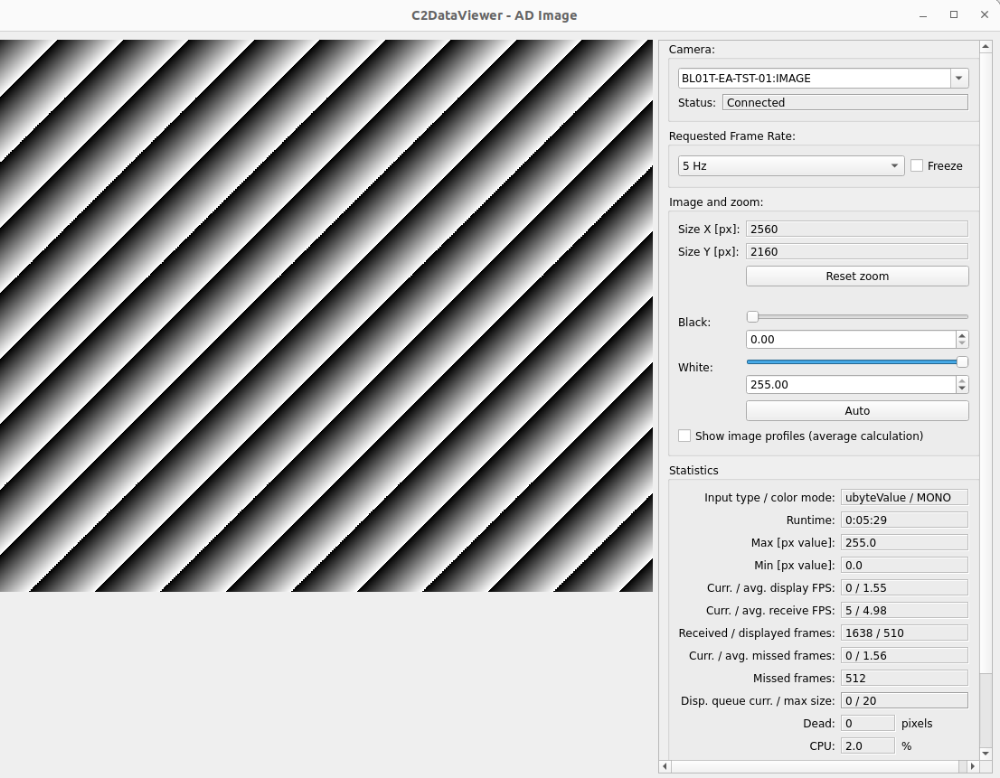
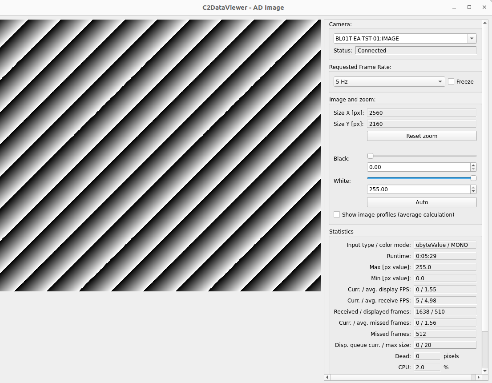

Deploy The Example IOC#
Examine the Example IOC Instance#
In the previous tutorial we created an example beamline source project called
bl01t and added it to our VSCode workspace. Go into VSCode and take
a look at the files in the project.
Take a look in the folder iocs/bl0t-ea-ioc-01. This contains a helm chart that defines the example IOC instance. To add a new IOC instance you could copy this folder and rename it to bl0t-ea-ioc-02 for example. You would then need to make a few changes, so here is a description of the files in this folder:
Chart.yaml- this is the helm chart definition file. It contains metadata about the chart and a list of dependencies. Most of this file can be left as is for all IOC instances. But you do need to change these fields:name- the unique name for the chart and the IOC instance it represents.Description- a short description of the IOC instance.
values.yaml- this is the helm values file. It contains the values that are substituted in to the helm templates when the helm chart is built. Most of the values that go into an IOC instance chart will be drawn from domain defaults which can be found in the folderbeamline-chart. Values you need to supply here are:base_image- the generic IOC image to use for this IOC instance. A generic IOC image contains all the necessary support modules for a given class of device and a compiled IOC binary with all those modules linked. The IOC instance we are defining in a helm chart provides the startup script and possibly database that makes this IOC instance unique. In this case the generic IOC is for the area-detector simulator device.prefix- the EPICS PV prefix for this IOC instance. This will set an environment variable IOC_PREFIX which declares the prefix for the IOC’s devIOCStats records. You can leave this value out if you use the ioc name as the prefix, but in this case we have used an uppercase version of IOC name as the prefix.
templates/ioc.yamlthis is the master template for this helm chart, it pulls in all the other templates from our dependencies. This file has to appear here but is boilerplate and should not need to be changed.configthis folder contains any files unique to this IOC instance. At runtime on the cluster when the generic IOC image is running it will see these files as mounted into the folder/repos/epics/ioc/config. In this case we have an EPICS startup scriptst.cmdonly and the default behaviour is just to run the IOC binary and pass itst.cmd.To see how the Generic IOC makes use of the config folder take a look at this bash script which runs on Generic IOC startup.
Deploy the IOC Instance to Kubernetes#
For the moment we are going to work with the original bl01t-ea-ioc-01 as is and have a go at deploying and interacting with it.
For this section we will be making use of the epics-containers-cli tool. This makes it easier to interact with kubernetes and helm from the command line and is described in more detail here: Command Line Interface for IOC Management.
You will need a working Kubernetes cluster for most of the rest of the tutorials. You can verify that it is working by asking for a list of IOCs running in your default domain as follows:
ec ps
You should see some headings and an empty list as you have not yet started an IOC Instance.
The following command will deploy the example IOC instance to your cluster:
ec ioc deploy bl01t-ea-ioc-01 23.4.1
Note that this is looking for the IOC’s helm chart in your OCI helm registry you delivered the IOC helm chart to the registry when you made a release of the beamline repo in the previous tutorial. You must supply a version number that exists. If you do not recall the version number you used, you can use the following command to list the versions available in your registry:
ec ioc versions bl01t-ea-ioc-01
As the deployment is progressing you could use the following command to monitor the progress (hit ctrl-C to stop following the logs):
ec ioc logs bl01t-ea-ioc-01 -f
Note there may be a little delay while the cluster pulls the generic IOC image from the GitHub container registry.
Once the IOC is running you can find out the IP address of the pod it is running in with:
ec ps -w
This will show you the status of the IOC instance and the IP address of the pod it is running in. In a real beamline setup the IOCs would run in the same subnet as your workstation so you would not care about the IP address. But for the example you may need to do the following to let our EPICS clients know where to look for PVs:
export EPICS_CA_ADDR_LIST=ip_address_of_pod
export EPICS_PVA_ADDR_LIST=ip_address_of_pod
epics-containers does not yet have any provision for EPICS operator interfaces. For this example we have hand crafted some EDM screens to control and monitor the test IOC.
You can now launch the client applications as follows:
./blxxi-ea-ioc-01-gui.sh
c2dv --pv BL01T-EA-TST-01:IMAGE
Now make sure the AreaDetector is Acquiring by clicking Start if needed on the CAM screen. Next click on Auto to scale the black and white thresholds on the C2D viewer. You should see something like the following images.
Note
When you launch edm or c2dv for the first time you will see container images downloading, for an explanation of this see CLI Tools
 

Learning about Helm and Kubernetes Manifests#
It is instructive to see what helm is doing when you deploy the example IOC.
Helm uses templates to generate YAML Kubernetes Manifest which defines a set of resources. It applies this manifest to the cluster using kubectl.
To inspect the kubernetes manifest that is created when we deploy the example IOC you can use the following command:
ec ioc template iocs/bl01t-ea-ioc-01
This is expanding the local helm chart in the iocs folder and using
its templates/ioc.yaml plus the templates in helm-ioc-lib. These templates
are expanded using the values in the values.yaml file and also
beamline-chart/values.yaml and finally the default values.yaml file
in the helm-ioc-lib.
For a description of the key resources we create in this Kubernetes manifest see Kubernetes Resources in an IOC Instance.
Managing IOCs#
IOCs running in Kubernetes can be managed using the ec command.
Starting and Stopping IOCs#
To stop / start the example IOC:
ec ioc stop bl01t-ea-ioc-01
ec ioc start bl01t-ea-ioc-01
Monitoring and interacting with an IOC shell#
To attach to the ioc shell:
ec ioc attach bl01t-ea-ioc-01
Use the command sequence ctrl-P then ctrl-Q to detach or ctrl-D to restart the IOC and detach.
TODO: I’m having issues with the shell eating the ^P^Q sequences so at present you can only detach from the IOC by killing the terminal or using ^D.
To run a bash shell inside the IOC container:
ec ioc exec bl01t-ea-ioc-01
Once you have a shell inside the container you can inspect the following folders:
ioc code |
repos/epics/ioc |
support modules |
repos/epics/support |
epics binaries |
repos/epics/epics-base |
Logging#
To get the current logs for the example IOC:
ec ioc logs bl01t-ea-ioc-01
Or follow the IOC log until you hit ctrl-C:
ec ioc logs bl01t-ea-ioc-01 -f